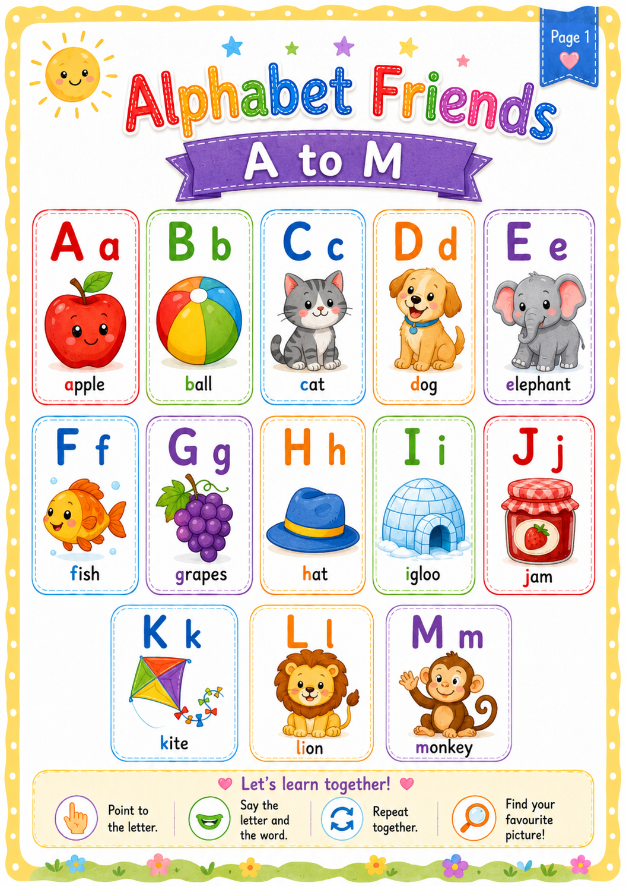
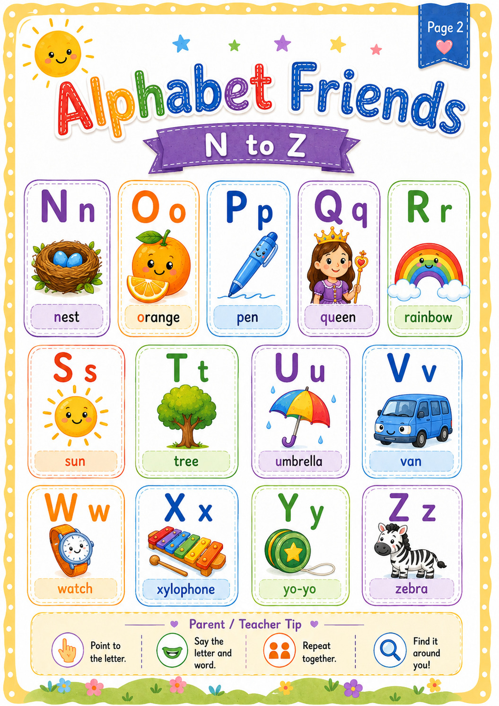
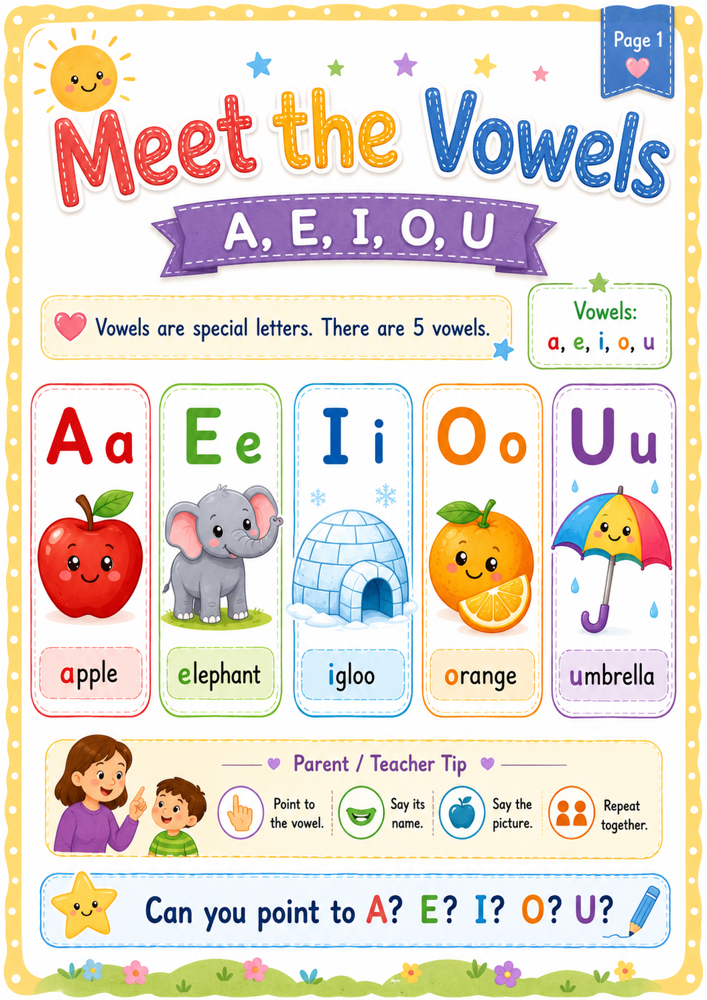
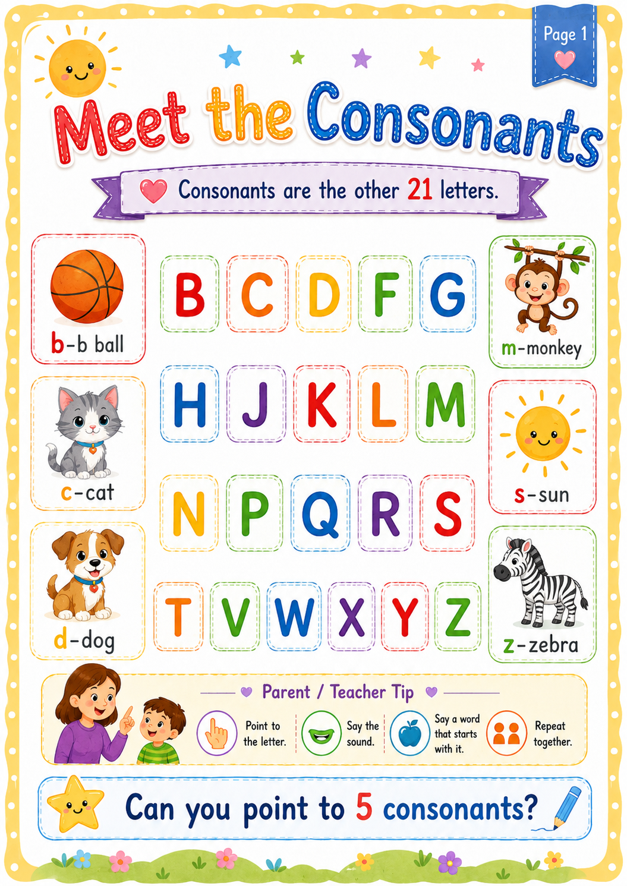

Point
Point to each vowel on the picture.
Nurturing Brilliant Minds
Early Literacy · Lesson 1
Let us learn the capital and small letters from A to Z. Watch the video first, then move through each learning picture in order.
Step 1
Listen carefully and say each letter aloud as it appears.
Ask the child to say as many letters as possible without looking at the video.
Step 2
Start with letters A to M. Point to each capital letter, say its name, then point to the matching small letter.

Which picture is your favourite? What letter does its name begin with?
Step 3
Continue the alphabet by pointing to and naming the letters from N to Z.

Find the letters that begin the words nest, orange, pen, queen, rainbow, sun and zebra.
Step 4
The five vowels are A, E, I, O and U.

Point to each vowel on the picture.
Say A, E, I, O and U aloud.
Find the vowel at the beginning of apple, elephant, igloo, orange and umbrella.
Step 5
The other 21 letters of the alphabet are consonants.

Point to five consonants. Then say a word that begins with one of those letters.
Step 6
Say the alphabet from A to Z. An adult may help when needed.
Ask an adult to name a letter. Point to that letter on one of the alphabet pictures.
Match a capital letter with its small letter, such as A with a or M with m.
Find and name the five vowels without assistance.
Complete the lesson in short stages. Young children do not need to remember every letter during the first session. Repeat the video and learning pictures regularly, and praise the child for careful effort.